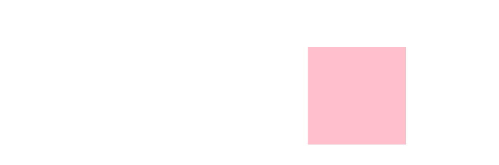
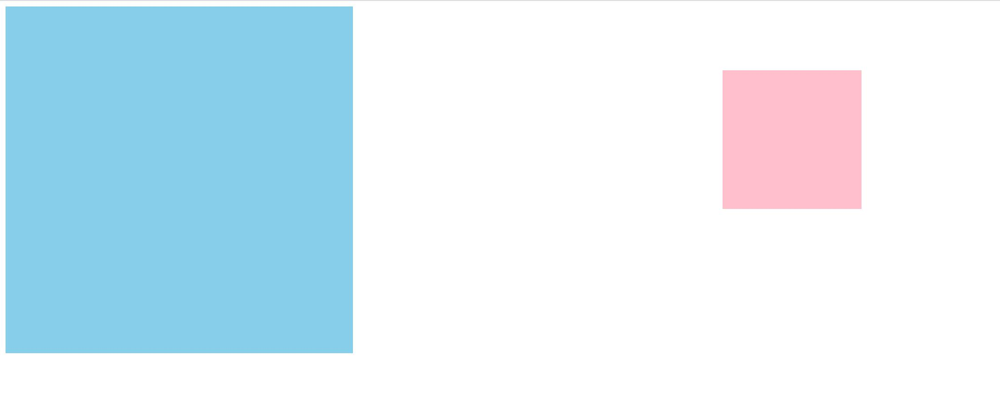
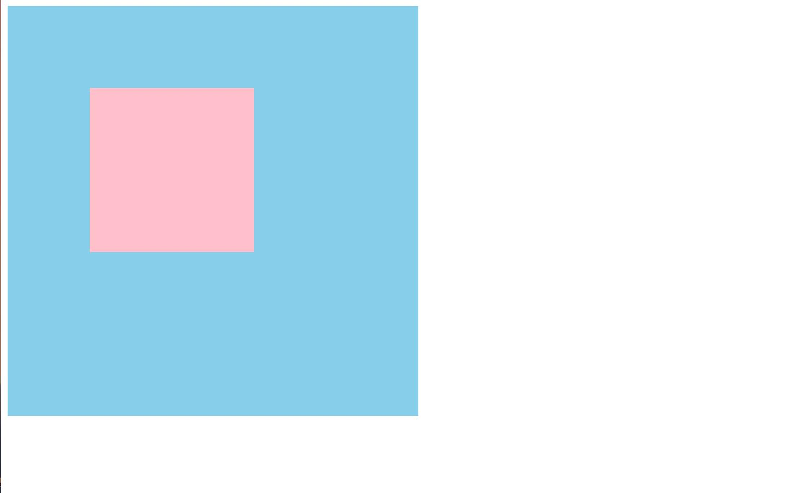
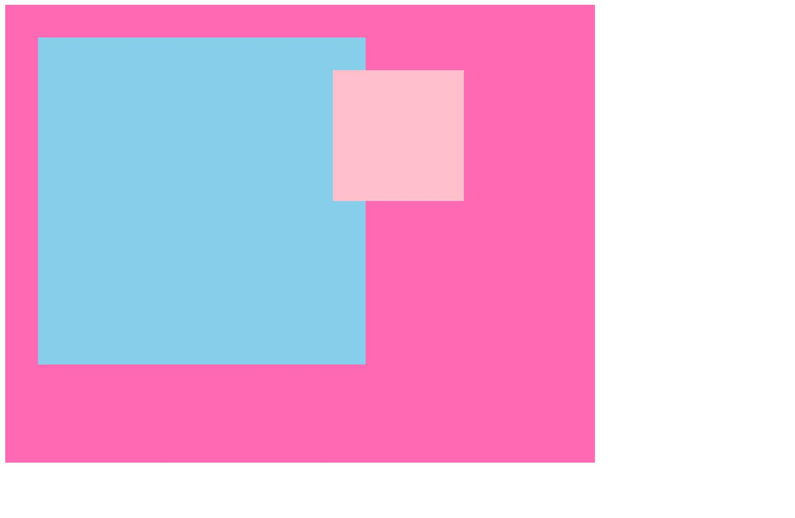
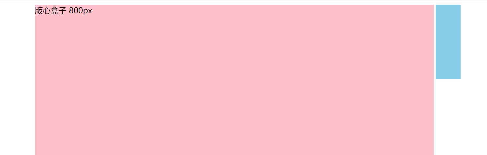
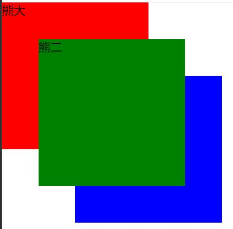
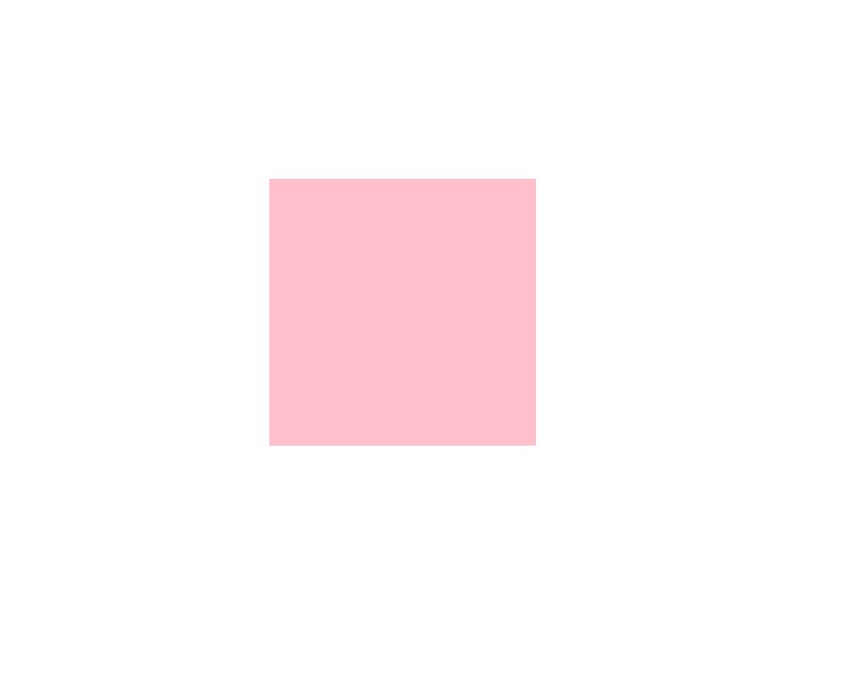
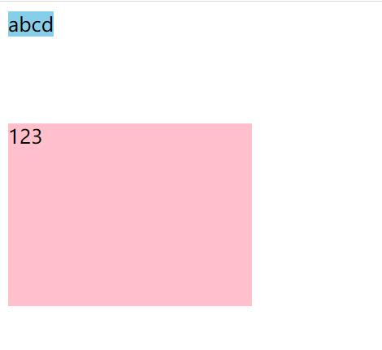
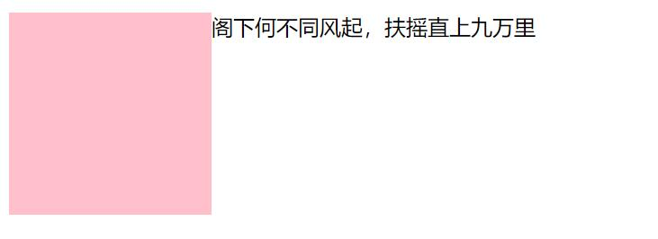
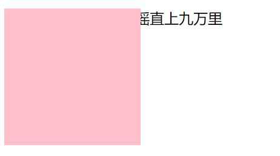

16 定位
CSS有三个非常重要的重要的特性：层叠性、继承性、优先级
16.1 为什么需要定位
提问:以下情况使用标准流或者浮动能实现吗?
1.某个元素可以自由的在一个盒子内移动位置，并且压住其他盒子.
2.当我们滚动窗口的时候，盒子是固定屏幕某个位置的。

以上效果，标准流或浮动都无法快速实现，此时需要定位来实现。所以
1．浮动可以让多个块级盒子一行没有缝隙排列显示，经常用于横向排列盒子。
2．定位则是可以让盒子自由的在某个盒子内移动位置或者固定屏幕中某个位置，并且可以压住其他盒子。
16.2 定位的组成
定位︰将盒子定在某一个位置，所以定位也是在摆放盒子，按照定位的方式移动盒子。
定位=定位模式＋边偏移
定位模式用于指定一个元素在文档中的定位方式。边偏移则决定了该元素的最终位置。
16.4 相对定位
相对定位是元素在移动位置的时候，是相对于它原来的位置来说的(自恋型)。 语法︰
相对定位的特点∶(务必记住)
- 它是相对于自己原来的位置来移动的(移动位置的时候参照点是自己原来的位置)。
- 原来在标准流的位置继续占有，后面的盒子仍然以标准流的方式对待它。(不脱标，继续保留原来位置)
因此，相对定位并没有脱标。它最典型的应用是给绝对定位当爹。
例子

<head>
<style>
.box1 {
/* 偏移模式：相对偏移 */
position: relative;
/* 边偏移，相对原来上偏 左偏100px */
top: 100px;
left: 100px;
width: 200px;
height: 200px;
background-color: pink;
}
.box2 {
width: 200px;
height: 200px;
background-color: deeppink;
}
</style>
</head>
<body>
<div class="box1"></div>
<div class="box2"></div>
</body>16.5 绝对定位
绝对定位是元素在移动位置的时候，是相对于它祖先元素来说的（拼爹型)。
语法
绝对定位的特点∶(务必记住)
- 如果没有祖先元素或者祖先元素没有定位，则以浏览器左上角为准定位（Document文档)。
- 如果祖先元素有定位（相对、绝对、固定定位），则以最近一级的有定位祖先元素为参考点移动位置。
- 绝对定位不再占有原来的位置。（脱标）
例子1 没有祖先元素 
<head>
<style>
.son {
position: absolute;
top: 100px;
right: 200px;
width: 200px;
height: 200px;
background-color: pink;
}
</style>
</head>
<body>
<div class="son"></div>
</body>例子2
有祖先元素，但祖先元素没有定位

<head>
<style>
.father {
width: 500px;
height: 500px;
background-color: skyblue;
}
.son {
position: absolute;
top: 100px;
right: 200px;
width: 200px;
height: 200px;
background-color: pink;
}
</style>
</head>
<body>
<div class="father">
<div class="son"></div>
</div>
</body>例子3
父元素有定位模式

<head>
<style>
.father {
/* 给父元素加个定位模式 */
position: relative;
width: 500px;
height: 500px;
background-color: skyblue;
}
.son {
position: absolute;
top: 100px;
right: 200px;
width: 200px;
height: 200px;
background-color: pink;
}
</style>
</head>
<body>
<div class="father">
<div class="son"></div>
</div>
</body>例子4
父元素没有有定位模式，但爷爷有有定位模式

<head>
<style>
.yeye {
position: relative;
width: 800px;
height: 600px;
background-color: hotpink;
padding: 50px;
}
.father {
width: 500px;
height: 500px;
background-color: skyblue;
}
.son {
/* 此时以爷爷定位为准 */
position: absolute;
top: 100px;
right: 200px;
width: 200px;
height: 200px;
background-color: pink;
}
</style>
</head>
<body>
<div class="yeye">
<div class="father">
<div class="son"></div>
</div>
</div>
</body>16.6 子绝父相的由来
弄清楚这个口诀，就明白了绝对定位和相对定位的使用场景 。 这个“子绝父相”太重要了，是我们学习定位的口诀，是定位中最常用的一种方式这句话的意思是：子级是绝对定位的话，父级要用相对定位。
- 子级绝对定位，不会占有位置，可以放到父盒子里面的任何一个地方，不会影响其他的兄弟盒子。
- 父盒子需要加定位限制子盒子在父盒子内显示。
- 父盒子布局时，需要占有位置，因此父亲只能是相对定位。
这就是子绝父相的由来，所以相对定位经常用来作为绝对定位的父级。
总结∶因为父级需要占有位置，因此是相对定位，子盒子不需要占有位置，则是绝对定位。
当然，子绝父相不是永远不变的，如果父元素不需要占有位置，子绝父绝也会遇到。
例子
代码见学成在线案例
16.7 固定定位
固定定位是元素固定于浏览器可视区的位置。主要使用场景︰可以在浏览器页面滚动时元素的位置不会改变。如：右下角固定一个“返回首页”的盒子。
语法∶
固定定位的特点︰(务必记住)
- 以浏览器的可视窗口为参照点移动元素。
- 跟父元素没有任何关系
- 不随滚动条滚动。
- 固定定位不在占有原先的位置。
- 固定定位也是脱标的，其实固定定位也可以看做是一种特殊的绝对定位。
小技巧
固定定位小技巧∶固定在版心右侧位置。
小算法︰
- 让固定定位的盒子left: 50%.走到浏览器可视区（也可以看做版心）的一半位置。
- 让固定定位的盒子margin-left:版心宽度的一半距离。多走版心宽度的一半位置就可以让固定定位的盒子贴着版心右侧对齐了。
例子
<head>
<style>
.dj {
position: fixed;
top: 100px;
left: 40px;
}
</style>
</head>
<body>
<div class="dj">
<img src="../图片/pvp.png" alt="">
</div>
<p>请尽请吩咐吧，主人</p>
<p>请尽请吩咐吧，主人</p>
<p>请尽请吩咐吧，主人</p>
<p>请尽请吩咐吧，主人</p>
<p>请尽请吩咐吧，主人</p>
<p>请尽请吩咐吧，主人</p>
</body>例子2 右下角的返回首页
<head>
<style>
.back {
position: fixed;
width: 60px;
height: 60px;
border: 1px solid red;
right: 10px;
bottom: 50px;
}
</style>
</head>
<body>
<div class="back"></div>
<div style="height: 1000px;"></div>
</body>例子3 页面中间对话框
<head>
<style>
.dialog {
position: fixed;
height: 300px;
width: 500px;
background-color: red;
left: 0;
right: 0;
top: 200px;
margin: 0 auto;
/* 让对话框在页面居中 */
}
</style>
</head>
<body>
<div class="dialog"></div>
</body>例子3背景幕布
<head>
<style>
.mask {
background-color: black;
position: fixed;
top: 0;
bottom: 0;
left: 0;
right: 0;
opacity: 0.7;
z-index: 100;
/* 控制盒子的顺序、z-index越大，在上方 */
}
</style>
</head>
<body>
<div class="mask"></div>
</body>例子3

<head>
<meta charset="UTF-8">
<meta http-equiv="X-UA-Compatible" content="IE=edge">
<meta name="viewport" content="width=device-width, initial-scale=1.0">
<title>Document</title>
<style>
.w {
width: 800px;
height: 1400px;
background-color: pink;
margin: 0 auto;
}
.fixed {
position: fixed;
/* 走浏览器宽度的一半 */
left: 50%;
/* 利用margin走版心盒子的一半 */
margin-left: 405px;
width: 50px;
height: 150px;
background-color: skyblue;
}
</style>
</head>
<body>
<div class="fixed"></div>
<div class="w">版心盒子 800px</div>
</body>16.8 粘性定位
粘性定位可以被认为是相对定位和固定定位的混合，效果类似于excel的冻结窗口，下滑到一定位置时，变成了固定定位（冻结住）。Sticky 粘性的语法∶
粘性定位的特点︰
- 以浏览器的可视窗口为参照点移动元素（固定定位特点)
- 粘性定位占有原先的位置(相对定位特点)
- 必须添加top , left、right、bottom其中一个才有效
跟页面滚动搭配使用，兼容性较差，IE不支持。
例子
16.9 定位的总结
| 定位模式 | 是否脱标 | 移动位置 | 是否常用 | 应用场景 |
|---|---|---|---|---|
| static静态定位 | 否 | 不能使用边偏移 | 很少 | XX |
| relative相对定位 | 否（占有位置） | 是（不占有位置） | 常用 | XX |
| absolute绝对定位 | 是（不占有位置） | 带有定位的父级 | 常用 | XX |
| fixed固定定位 | 是（不占有位置） | 浏览器可视区 | 常用 | 右下角的返回首页、页面中间的对话框、背景幕布 |
| sticky粘性定位 | 否（占有位置） | 浏览器可视区 | 当前阶段很少用 | XX |
一定记住相对定位、固定定位、绝对定位两个大的特点：1.是否占有位置（脱标否） 2.以谁为基准点移动位置。
学习定位重点学会子绝父相。
16.10 定位叠放次序
在使用定位布局时，可能会出现盒子重叠的情况。此时，可以使用z-index来控制盒子的前后次序(z轴)
语法:
- 数值可以是正整数、负整数或0,默认是auto，数值越大，盒子越靠上
- 如果属性值相同，则按照书写顺序，后来居上
- 数字后面不能加单位
- 只有定位的盒子才有z-index属性
例子
绿色盒子最上面，其次是红色，最后是蓝色

<head>
<style>
.box {
position: absolute;
top: 0;
left: 0;
height: 200px;
width: 200px;
}
.xiongda {
background-color: red;
z-index: 1;
}
.xionger {
background-color: green;
left: 50px;
top: 50px;
z-index: 2;
}
.qiangge {
background-color: blue;
left: 100px;
top: 100px;
}
</style>
</head>
<body>
<div class="box xiongda">熊大</div>
<div class="box xionger">熊二</div>
<div class="box qiangge">光头强</div>
</body>16.11 定位的拓展
16.11.1 绝对/固定定位的盒子居中
加了绝对/固定定位的盒子不能通过margin:0 auto;水平居中，原因是脱离标准留。但是可以通过以下计算方法实现水平和垂直居中：
left: 50%;让盒子的左侧移动到父级元素的水平中心位置。margin-left:-100px;:让盒子向左移动自身宽度的一半。
例子
粉色盒子水平垂直居中

16.11.2 定位特殊性
绝对定位和固定定位也和浮动类似。
- 行内元素添加绝对或者固定定位，可以直接设置高度和宽度。
- 块级元素添加绝对或者固定定位，如果不给宽度或者高度，默认大小是内容的大小。
例子
粉色的行内元素span加了绝对定位后，可以设置宽度和高度。 蓝色块级元素本来应该是占满一整行，加了觉对定位后，宽度高度默认为内容大小。 
16.11.4 绝对/固定定位会完全压住盒子
浮动元素不同，只会压住它下面标准流的盒子，但是不会压住下面标准流盒子里面的文字(图片)。浮动之所以不会压住文字，因为浮动产生的目的最初是为了做文字环绕效果的。文字会围绕浮动元素。
但是绝对定位(固定定位）会压住下面标准流所有的内容。
例子
粉色div浮动时不压住文字，绝对定位压住文字

<head>
<style>
.box {
/* 浮动的元素不会压住下面标准流的文字 */
/* float: left; */
position: absolute;
width: 150px;
height: 150px;
background-color: pink;
}
</style>
</head>
<body>
<div class="box"></div>
<p>阁下何不同风起，扶摇直上九万里</p>
</body>淘宝焦点图案例
实现效果如下：

详见：示例
16.12 页面布局总结
通过盒子模型，清楚知道大部分html标签是一个盒子通过CSS浮动、定位可以让每个盒子排列成为网页 个完整的网页，是标准流、浮动、定位一起完成布局的，每个都有自己的专门用法
- 标准流：可以让盒子上下排列或者左右排列，垂直的块级盒子显示就用标准流布局
- 浮动：可以让多个块级元素一行显示或者左右对齐盒子，多个块级盒子水平显示就用浮动布局。
- 定位：最大的特点是有层叠的概念，就是可以让多个盒子前后叠压来显示。如果元素自由在某个盒子内移动就用定位布局。
16.13 元素的显示与隐藏
类似网站广告，当我们点击关闭就不见了，但是我们重新刷新页面，会重新出现!本质: 让一个元素在页面中隐藏或者显示出来
- display显示隐藏元素但是不保留位置
- visibility显示隐藏元素 但是保留原来的位置
- overflow溢出显示隐藏但是只是对于溢出的部分处理
16.13.1 display 属性
display属性用于设置一个元素应如何显示
- display:none ;隐藏对象
- display:block;除了转换为块级元素之外，同时还有显示元素的意思
display 隐藏元素后不再占有原来的位置。后面应用及其广泛，搭配JS可以做很多的网页特效。
练习
有两个盒子，其中用display:none; 隐藏第一个盒子，隐藏元素后不再占有原来的位置。
详见：示例
用display:block;显示第一个盒子。
详见：示例
16.13.2 visibility 可见性
visibility 属性用于指定一个元素应可见还是隐藏
- visibility : visible; 元素可视
- visibility : hidden; 元素隐藏
visibility 隐藏元素后，继续占有原来的位置。
练习
有两个盒子，详见：示例，现在打算隐藏第一个盒子，且保留隐藏盒子的位置。
详见：示例
16.13.3 overfolw溢出
overflow 属性指定了如果内容溢出一个元素的框(超过其指定高度及宽度)时的页面显示形式。
| 属性值 | 描述 | 案例 |
|---|---|---|
| visible | 默认属性，不剪切内容也不添加滚动条 | 示例 |
| hidden | 不显示超过对象尺寸的内容，超出的部分隐藏掉 | 示例 |
| scroll | 不管超出内容否，总是显示滚动条 | 示例 |
| auto | 超出自动显示滚动条，不超出不显示滚动条 | 示例 |
注意：
- 一般情况下，我们都不想让溢出的内容显示出来，因为溢出的部分会影响布局
- 但是如果有定位的盒子，请慎用overflow:hidden 因为它会隐藏多余的部分
案例
土豆网鼠标经过显示遮罩。
详见：示例